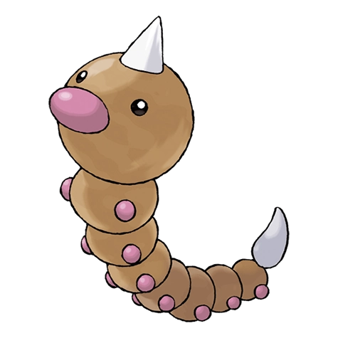

Видл

Видл — Покемон 1 поколения под номером 13 в Покедекс. Обитает он в регионе Канто и относится к Ядовитому и Жучиному типу. У Видла очень острое обоняние. Он способен отличать свои любимые виды листьев от тех, которые ему не нравятся, просто понюхав их своим красным носом.
Тип и слабости:
Жук
Ядовитый
Эволюция
# 013 Видл
=>
# 014 Какуна